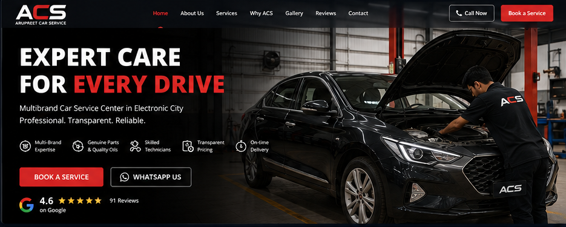
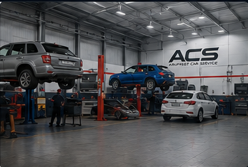

Periodic service
Engine oil, filters, fluids and scheduled checks for regular maintenance.

Personal multi-brand maintenance, diagnostics and repairs with practical advice, transparent work and a service history that stays with your car.
Routine maintenance, diagnostics and repairs for multiple car brands — handled with a practical inspection-first approach.
Engine oil, filters, fluids and scheduled checks for regular maintenance.
Inspection-led troubleshooting for noises, warning lights and performance issues.
Brake pads, steering, suspension and wear-related checks and repair.
Cooling, battery, electrical diagnosis and comfort-related repairs.
Practical repair support for common mechanical concerns across brands.
Tyre inspection, rotation, alignment guidance and related maintenance.
No dealership maze. A small workshop flow built around direct conversation and clear decisions.
Book a day online, by phone or on WhatsApp. The booking appears directly in the ACS schedule.
Share what you noticed. ACS inspects the car and takes a short test drive where useful.
After inspection, ACS can print a simple job card for the mechanic—or skip it and continue directly to billing.
Pay, receive a clean digital summary and keep the complete service history for next time.

ACS is intentionally compact. That means fewer hand-offs, direct communication and attention from the same small team that sees the car.
“Understand the car, fix what is needed, and keep the owner informed.”
Choose a preferred date and time. Your booking goes straight into the ACS workshop schedule.
Plot No. 1, Podu Main Road, near Sree TVS, Bettadasanapura, Electronic City, Bengaluru 560105.